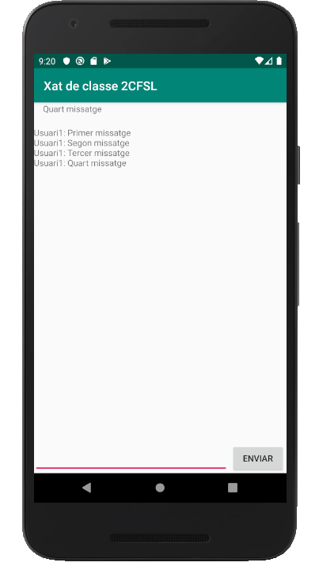

3.3.2 RD-Android: Accés a les dades
Una vegada vist un exemple, en el qual hem guardat dades i també les hem recuperades i hem vist els canvis en temps real, anem a veure més exemples de com accedir a les dades.
En l'exemple anterior hem accedit a una parella clau-valor situada en l'arrel de la Base de Dades.
Anem a veure alguns exemples de com accedir dins de l'estructura JSON guardada en Firebase. Com el que voldrem serà mostrar més informació, incorporarem dos TextView per a mostrar més coses còmodament, i un EditText i un Button per a poder introduir informacions.
Aquesta serà ara l'estructura del activity_main.xml:
<?xml version="1.0" encoding="utf-8"?>
<androidx.constraintlayout.widget.ConstraintLayout xmlns:android="http://schemas.android.com/apk/res/android"
xmlns:app="http://schemas.android.com/apk/res-auto"
xmlns:tools="http://schemas.android.com/tools"
android:layout_width="match_parent"
android:layout_height="match_parent"
tools:context=".MainActivity">
<TextView
android:id="@+id/ultim"
android:layout_width="382dp"
android:layout_height="39dp"
android:layout_alignParentTop="true"
android:layout_alignParentRight="true"
android:text=""
app:layout_constraintEnd_toEndOf="parent"
app:layout_constraintStart_toStartOf="parent"
app:layout_constraintTop_toTopOf="parent" />
<TextView
android:id="@+id/area"
android:layout_width="0dp"
android:layout_height="0dp"
android:text=""
app:layout_constraintBottom_toTopOf="@+id/text"
app:layout_constraintEnd_toEndOf="parent"
app:layout_constraintStart_toStartOf="parent"
app:layout_constraintTop_toBottomOf="@+id/ultim"
app:layout_constraintVertical_bias="0.261" />
<EditText
android:id="@+id/text"
android:layout_width="317dp"
android:layout_height="47dp"
android:layout_alignParentTop="true"
android:layout_centerHorizontal="true"
app:layout_constraintBottom_toBottomOf="parent"
app:layout_constraintEnd_toStartOf="@+id/boto"
app:layout_constraintHorizontal_bias="0.0"
app:layout_constraintStart_toStartOf="parent"
app:layout_constraintTop_toTopOf="@+id/ultim"
app:layout_constraintVertical_bias="1.0" />
<Button
android:id="@+id/boto"
android:layout_width="wrap_content"
android:layout_height="wrap_content"
android:layout_below="@+id/text"
android:layout_centerHorizontal="true"
android:text="Enviar"
app:layout_constraintBottom_toBottomOf="parent"
app:layout_constraintEnd_toEndOf="parent"
app:layout_constraintHorizontal_bias="0.993"
app:layout_constraintStart_toStartOf="parent" />
</androidx.constraintlayout.widget.ConstraintLayout>
Així les parts que tindrem, i que ens servirà per a mostrar cadascuna de les coses que volem, de forma similar a la de IntelliJ, seran:
- El títol de l'aplicació, que el modificarem amb un addListenerForSingleValueEvent()
- El TextView de dalt, anomenat ultim, que el modifiquem per mig d'un addValueEventListener()
- El TextView central que ocupa quasi tota la pantalla, anomenat area, que el modificarem amb la modificació de la llista addChildEventListener()
- El EditText de baix, anomenat text, i el botó, que servirà per a afegir un nou element del xat
Aquest és l'esquelet del progama:
import androidx.appcompat.app.AppCompatActivity
import android.os.Bundle
import kotlinx.android.synthetic.main.activity_main.*
import com.google.firebase.database.FirebaseDatabase
import com.google.firebase.database.DatabaseError
import com.google.firebase.database.DataSnapshot
import com.google.firebase.database.ValueEventListener
class MainActivity : AppCompatActivity() {
override fun onCreate(savedInstanceState: Bundle?) {
super.onCreate(savedInstanceState)
setContentView(R.layout.activity_main)
boto.text = "Enviar"
// Referències a la Base de Dades i a les variables a1, nomXat i xat
// Exemple de guardar dades. Primer sobre a1, i despŕes sobre la llista xat
// Exemple de listener de lectura única addListenerForSingleValueEvent()
// Per a posar el títol. Sobre nomXat
// Exemple de listener de lectura contínua addValueEventListener()
// Per a posar l'últim missatge registrat. Sobre a1
// Exemple de listener d'una llista addChildEventListener()
// Per a posar tota la llista de missatges. Sobre xat
}
}Nota
Recordeu que per a que ens reconega tots els elements del layout, al principi del build.gradle de l'aplicació heu d'afegir la següent línia :
id 'kotlin-android-extensions'
Referència a la Base de Dades i a les dades concretes a les quals volem accedir
Podem fer referència de forma individual a cadascuna de les "variables" guardades, és a dir a cadascuna de les parelles clau-valor:
// Referències a la Base de Dades i a les variables a1, nomXat i xat
val database = FirebaseDatabase.getInstance()
val refA1 = database.getReference("a1")
val nomXat = database.getReference("nomXat")
val xat = database.getReference("xat")
Guardar dades
L'operació de guardar és més senzilla que la de recuperar. Disposem del mètode setValue() de la referència a la dada a la que volem accedir. Si la parella clau-valor on es va a guardar ja existia, doncs modificarà el valor. I si no existia, la crearà.
En el nostre exemple guardarem en el moment d'apretar el botó. Inicialment ho farem sobre a1, encara que quan vegem les llistes ho canviarem
// Exemple de guardar dades. Primes sobre a1, i despŕes sobre la llista xat
boto.setOnClickListener {
refA1.setValue(text.text.toString())
text.setText("")
}
Recuperar dades
Recordem que podem muntar dos tipus de Listeners, però el seu funcionament serà similar
- Els que escolten només una vegada al principi: addListenerForSingleValueEvent()
- Els que es queden escoltant tota l'estona: addValueEventListener()
En ambdós casos obtenim com a paràmetre un DataSnapshot (còpia) de la dada registrada. I d'aquest tipus, DataSnapshot, sí que tenim el mètode getValue() per a accedir a la dada. Ambdós tipus de Listeners tenen un tractament absolutament similar, únicament amb la diferència abans esmentada que el primer està sempre escoltant, i el segon només escolta una vegada al principi.
El mètode getValue() admet un paràmetre que serà la classe del tipus que volem obtenir. Podem posar les següents:
- String.class, i aleshores el que obtenim s'interpretarà com un String
- Double.class, i s'interpretarà com un número real de doble precisió
- Boolean.class, i s'interptretarà com un valor booleà.
- També es poden posar classes per a obtenir tot un objecte (Map) i per a una llista (List). Fins i tot es podria arribar a posar una classe definida per nosaltres. Però amb els anteriors nosaltres en tindrem prou
Mirem la manera d'utilitzar una i altra. Ho apliquem a dues referències diferents, per a que pugueu comprovar que una sempre té efecte, mentre que l'altra només té efecte la primera vegada, i si després es modifiquen les dades, l'aplicació no s'enterarà.
addListenerForSingleValueEvent()
En aquest primer exemple anem a agafar una única vegada la dada que ens interessa, i per tant utilitzarem addListenerForSingleValueEvent(). Ens servirà per a posar el títol de l'aplicació, i ho farem consultant la clau nomXat, que la tindrem creada des de la pregunta 3.2.2 de la part de IntelliJ:
// Exemple de listener de lectura única addListenerForSingleValue()
// Per a posar el títol. Sobre nomXat
nomXat.addListenerForSingleValueEvent(object : ValueEventListener {
override fun onDataChange(dataSnapshot: DataSnapshot) {
val value = dataSnapshot.getValue(String::class.java)
setTitle(value)
}
override fun onCancelled(error: DatabaseError) {
}
})
addValueEventListener()
És la que sempre està escoltant. Per tant qualsevol modificació en la Base de Dades es veurà reflectit, és a dir, canviarà el contingut del TextView ultim
// Exemple de listener de lectura contínua addValueEventListener()
// Per a posar l'últim missatge registrat. Sobre a1
refA1.addValueEventListener(object : ValueEventListener {
override fun onDataChange(dataSnapshot: DataSnapshot) {
val value = dataSnapshot.getValue(String::class.java)
ultim.setText(value)
}
override fun onCancelled(error: DatabaseError) {
}
})
Tractament de llistes
Ja vam veure en la pregunta 3.2.2 de la part de IntelliJ que la manera més pràtica d'inserir elements en una llista, per a no haver de dur un manteniment dels índex, era amb el mètode push(), i que per a no tenir efectes no desitjats era millor posar tot l'element d'una vegada. Així, si hem de posar el nom de l'usuari que farà l'entrada del xat i el contingut del missatge, millor crear un objecte que ho continga tot, i col·locar en la llista aquest objecte.
Crearem per tant una classe anomenada Missatge, que inclourà les propietats nom i contingut. Crearem un objecte Missatge amb uns nous valors, i veurem que el podem guardar perfectament.
Primer definim la classe. El millor és que el guardem com una classe nova, és a dir com a Missatge.kt:
class Missatge(val nom: String, val contingut: String)Per a guardar, col·locaríem aquestes sentències entre les accions del OnClik del botó, substituint les sentències que modificaven a1, perquè ara afegirem a la llista xat :
// Exemple de guardar dades. Primer sobre a1, i despŕes sobre la llista xat
boto.setOnClickListener {
refA1.setValue(text.text.toString())
xat.push().setValue(Missatge("Usuari1",text.text.toString()))
text.setText("")
}
Ara només ens falta el tractament de lectura de les llistes.
Utilitzarem el Listener ChildEventListener, i hem d'utilitzar el mètode addChildEventListener() sobre la llista. Voldrà la implementació dels mètodes: onChildAdded(), onChildChanged(), onChildRemoved() i onChildMoved(), però nosaltres només utilitzarem onChildAdded()
Al dataSnapshot arriba únicament l'element introduït, modificat o esborrat, no tota la llista. Per tant és molt còmode. També arriba una referència a l'element anterior com a segon paràmetre, per si hem de fer algun tractament, cosa que en aquest exemple no ens fa falta:
// Exemple de listener d'una llista addChildEventListener()
// Per a posar tota la llista de missatges. Sobre xat
xat.addChildEventListener(object : ChildEventListener {
override fun onChildAdded(dataSnapshot: DataSnapshot, s: String?) {
area.append(
dataSnapshot.child("nom").getValue(String::class.java) + ": " + dataSnapshot.child("contingut").getValue(String::class.java) + "\n" );
}
override fun onChildChanged(dataSnapshot: DataSnapshot, s: String?) {
}
override fun onChildRemoved(dataSnapshot: DataSnapshot) {
}
override fun onChildMoved(dataSnapshot: DataSnapshot, s: String?) {
}
override fun onCancelled(databaseError: DatabaseError) {
}
})
Aquest seria el resultat:

Llicenciat sota la Llicència Creative Commons Reconeixement NoComercial SenseObraDerivada 4.0